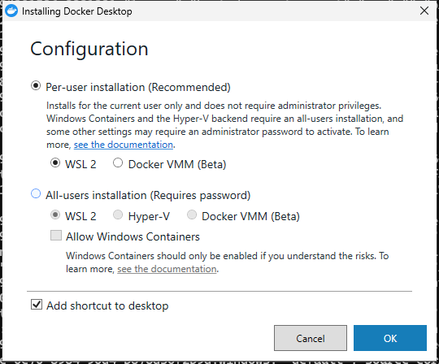

Справочник по ClickHouse · модуль 0 · рабочее место
Глава 0.1а
Windows: Docker Desktop
и WSL 2
Команда запуска стенда не сработала на Windows. Определим, какой компонент ещё не готов, и подготовим среду для запуска ClickHouse.
- Категория
- Подготовка рабочего места
- Уровень
- Первое знакомство с Windows и WSL
- До главы
- 0.1 · Стенд и базы стенда
- Понадобится
- интернет; разрешение администратора на установку WSL; возможна перезагрузка
Выберите один маршрут
Основной — Docker Desktop с WSL 2. Команды выполняем в PowerShell Windows. Отдельная Ubuntu не нужна.
Запасной — Docker Engine в Ubuntu WSL. Это отдельная установка с Linux-командами и обслуживанием службы. Она подходит, если Desktop нельзя использовать, но сама WSL 2 работает; это не исправление неработающей виртуализации.
§1Из чего состоит среда
Зачем это знатьОшибка подключения к Docker ещё не означает ошибку ClickHouse: запрос мог вообще не дойти до контейнера.
Контейнер — изолированная среда процесса с его файлами и настройками. Образ ClickHouse в стенде рассчитан на Linux: ему нужно ядро Linux — часть операционной системы, которая управляет процессами, памятью и устройствами. Ядро Windows его не заменяет.
WSL (Windows Subsystem for Linux) — подсистема для работы с Linux в Windows. В режиме WSL 2 настоящее ядро Linux работает в облегчённой виртуальной машине. Аппаратная виртуализация — возможности процессора для выполнения таких машин под управлением гипервизора, системного слоя виртуализации.
Проследим зависимость от Windows до процесса базы. Стрелки ниже показывают зависимость: каждому следующему слою нужен предыдущий.
- 1 · Windows
Запускает приложения пользователя и компоненты WSL.
- 2 · Виртуализация
Процессор поддерживает её, прошивка разрешает, гипервизор Windows может запускаться.
- 3 · WSL 2
Создаёт управляемую виртуальную машину с ядром Linux.
- 4 · Linux-среда Docker Desktop
Служебная среда
docker-desktop, не ваша Ubuntu. Даёт Linux-процессам системные ресурсы. - 5 · Docker Engine
Служба, которая создаёт и запускает контейнеры. Docker Desktop устанавливает и обслуживает её.
- 6 · Контейнер ClickHouse
Внутри работает сервер базы; он ещё должен запуститься и принять подключение.
Ubuntu в этой цепочке нет: Desktop использует собственную Linux-среду. Установка Ubuntu «на всякий случай» добавит ещё один дистрибутив — набор Linux-программ и файлов, — но не починит нижние слои.
Отдельно от Engine работает Docker CLI — клиент командной строки docker. Он передаёт команды службе. Compose — плагин этого клиента: читает описание нескольких сервисов из файла проекта и отправляет Engine команды их запуска. Поэтому наличие команды docker ещё не доказывает, что служба доступна.
По-простому: бланк заказа и работающая мастерская
Можно получить бланк заказа, когда мастерская закрыта. Можно открыть мастерскую, но ещё не начать работу над заказом. Можно начать работу, но не получить готовое изделие.
Что есть что: бланк — установленный CLI; открытая мастерская — доступный Engine; работа над заказом — запущенный контейнер; проверенное изделие — ответ сервера базы. Граница аналогии: она помогает различать состояния готовности. Устройство Linux в ней не отражено. Контейнер использует ядро своей среды и не является отдельным физическим компьютером.
§2Подготовить Windows и WSL 2
Зачем этот шагПроверить требования до установки Desktop и не менять настройки компьютера без установленной причины.
Версия Windows и разрешения
Откройте окно «Выполнить» сочетанием Win + R, введите winver и нажмите Enter. Запишите редакцию, версию и сборку Windows. Это действие в интерфейсе Windows, не команда Ubuntu.
В требованиях Docker Desktop указаны 64-битная Windows и процессор с поддержкой виртуализации и SLAT (аппаратной трансляции памяти). Требуется не менее 8 ГБ оперативной памяти и WSL версии 2.1.5 или новее. Для Windows 11 указан минимум 23H2, сборка 22631; для Windows 10 — 22H2, сборка 19045. Одного номера сборки недостаточно: Docker ограничивает поддержку также сроком обслуживания Windows у Microsoft; старый минимум не гарантирует поддержку вашей редакции сегодня. Windows Server этим маршрутом не поддерживается.
Если система не подходит или установка ограничена организацией, передайте сведения администратору. Не обходите ограничения и не отключайте антивирус, защиту памяти или другие средства безопасности ради установки.
Порядок проверки ниже отделяет совместимость системы от готовности WSL. При первом неуспешном результате остановитесь на соответствующей строке.
| Проверка | Что устанавливаем | Если требование не выполнено |
|---|---|---|
| winver и требования Docker | Подходит ли версия Windows | Согласовать поддерживаемую систему |
| Диспетчер задач → ЦП | Разрешена ли виртуализация | Обратиться к владельцу или администратору |
| wsl --version | Установлен ли нужный выпуск WSL | Установить или обновить WSL с разрешения |
Требования проверяются по отдельности: подходящая сборка Windows ещё не подтверждает включённую виртуализацию. Начнём со строки процессора.
Разрешена ли виртуализация
В диспетчере задач (Ctrl + Shift + Esc) откройте сведения о производительности процессора и найдите строку «Виртуализация» / Virtualization. В разных версиях Windows раздел может быть вкладкой или пунктом боковой панели.
- Включено: прошивка разрешает виртуализацию. Это ещё не проверка работоспособности WSL; переходите к командам ниже.
- Отключено: остановитесь. Нужна проверка настроек прошивки BIOS/UEFI владельцем или администратором по инструкции производителя. Здесь мы их не меняем.
- Windows сама запущена в виртуальной машине: может потребоваться вложенная виртуализация со стороны её владельца. Установка Ubuntu внутри этой Windows требование не обходит.
Проверка и установка WSL
Откройте PowerShell Windows. Если используете приложение «Терминал», выберите профиль PowerShell, а не Ubuntu и не «Командная строка» (cmd). Для чтения версии права администратора обычно не нужны.
wsl --version
Найдите версию пакета WSL в первой строке. Если она не ниже 2.1.5, переходите к Desktop. Если команда не поддерживает ключ --version, это может быть старая WSL, а не полное отсутствие подсистемы.
Для старой WSL выполните обновление. Для отсутствующей WSL — установку без пользовательского дистрибутива. Выберите только подходящий случай; для изменения компонентов Windows откройте PowerShell от имени администратора с разрешения владельца компьютера.
wsl --update
wsl --install --no-distribution
Ключ --no-distribution не устанавливает Ubuntu: Desktop она не нужна. Выполните предложенную Windows перезагрузку, предварительно сохранив работу, затем повторите wsl --version. Если команда wsl вообще не распознаётся, а система удовлетворяет требованиям, не перебирайте команды настройки загрузки: передайте сообщение администратору и используйте инструкцию установки Microsoft.
Получилось, если поддерживаемая Windows разрешает виртуализацию, установка WSL завершилась, а её версия соответствует требованиям. Окончательную работоспособность Linux-основы проверим запуском Engine.
§3Запустить Docker Desktop
Зачем этот шагПолучить доступную службу для запуска Linux-контейнеров.
- Установите Docker Desktop по инструкции Docker для Windows.Выберите установщик под архитектуру своего компьютера и backend WSL 2, если установщик предлагает выбор. Ознакомьтесь с условиями лицензии; не считайте любой вариант использования бесплатным.
- Запустите Docker Desktop.Открытие PowerShell само по себе его не запускает. В настройках проверьте использование WSL 2: в документации параметр называется Use WSL 2 based engine. Если настройки интеграции WSL отсутствуют, проверьте, не выбран ли режим Windows containers: для образа ClickHouse нужен режим Linux containers.
- Дождитесь готовности Engine.Затем откройте новое окно PowerShell, чтобы оно получило обновлённые пути к установленным программам, и выполните проверку ниже.
docker version docker compose version
В результате первой команды нужны два раздела: Client и Server. Первый описывает CLI, второй — ответивший Engine. Ошибка после раздела Client означает, что CLI установлен, но выбранный им Engine не ответил. Вторая команда проверяет наличие плагина Compose. Работа контейнера проверяется отдельно.

Как читать имеющиеся кадры
Ниже — сохранённые кадры Windows из предыдущей редакции главы. На кадре с работающим Engine виден номер Docker Desktop 4.99.0; экран приветствия относится к той же прежней серии съёмки. Это исторические иллюстрации: расположение кнопок в вашей версии может отличаться. На текущей Windows эти окна в данной редакции не пересняты.


Получилось, если docker version получает раздел Server, а docker compose version сообщает версию Compose. Теперь выполните запуск проекта из главы 0.1 в PowerShell Windows. Само получение проекта и загрузку данных здесь не повторяем.
§4Дерево диагностики: на каком шаге остановились
Зачем этот шагКаждая проверка ниже отделяет один подтверждённый факт от предположений. Идите сверху вниз и выбирайте ветку по своему результату.
Пройдём цепочку проверок. Из каждого узла есть два выхода: результат подтверждён — переход дальше; результат не получен — разбор соответствующей ветви ниже.
- CLI найден?
Да → проверка службы. Нет → ветвь 1: установка и новое окно PowerShell.
- Server отвечает?
Да → проверка проекта. Нет → ветвь 2: Desktop, WSL и адрес Engine.
- Контейнер проекта работает?
Да → проверка SQL. Нет → ветвь 3: папка, запуск Compose и журнал.
- SQL вернул результат?
Да → проверка данных по 0.1. Нет → ветвь 4: учётные данные, порт и журнал сервера.
Успех на одном узле разрешает следующую проверку. Он не заменяет её: ответ Server ещё не подтверждает наличие контейнера.
Все команды этого раздела — в PowerShell Windows. Начиная с проверки Compose, текущей папкой должна быть папка проекта clickhouse-practice, где находится его файл compose.yaml. Диагностика не сбрасывает данные и не перезапускает службы.
1 · Команда docker не распознана
Проверка: выполните docker version в новом PowerShell после установки Desktop.
Если по-прежнему не распознана: подтверждено отсутствие доступного CLI в этом окне. Состояние WSL пока неизвестно. Проверьте, завершилась ли установка Desktop, и передайте администратору её результат. Если появился Client: CLI найден → ветвь 2.
2 · Есть Client, но нет ответа Server
Проверка: запущен ли Desktop и какое сообщение он показывает? Повторите wsl --version; если Desktop сообщает об устаревшей WSL, обновите её по §2. При сообщении о виртуализации вернитесь к проверке процессора.
Если Desktop сообщает о готовности, проверьте контекст — сохранённый адрес Engine, к которому CLI отправляет команды.
docker context show docker context ls Get-ChildItem Env:DOCKER*
В списке контекстов звёздочка показывает выбранный. Переменные DOCKER_HOST и DOCKER_CONTEXT, если они заданы, могут переопределять подключение. Отсутствие вывода последней команды означает, что таких переменных в этом процессе нет. Не переключайте адрес вслепую: проверьте, относится ли он к вашему Desktop, а не к другому локальному или удалённому серверу.
Подтверждённая причина: только если адрес указывает на другой Engine, установлено несоответствие подключения. Используйте согласованный с преподавателем контекст Desktop. Если адрес правильный, но есть ошибка доступа, сохраните её текст и диагностику Desktop для администратора: одного Access is denied недостаточно, чтобы доказать наличие второго Docker. Server ответил: служба доступна → ветвь 3.
3 · Engine отвечает, но стенд не появился
Проверка: если не распознаётся docker compose, не установлен или недоступен плагин Compose — исправьте установку Desktop. Если Compose сообщает об отсутствии конфигурационного файла, вы не в папке проекта. При доступном Compose выполните:
docker compose ps -a
Среди строк docker compose ps -a найдите сервис clickhouse — контейнер course-clickhouse. Сервис seed загружает данные и затем завершается: его состояние Exited (0) штатное. Следующие развилки относятся к clickhouse.
Нет сервиса ClickHouse: в этом Compose-проекте его контейнер ещё не создан либо выбран не тот проект. Сверьте папку и запуск с 0.1. Состояние Exited или Restarting: контейнер завершился или перезапускается; причина пока не установлена. Читайте журнал следующей командой, не удаляя тома с данными.
docker compose logs --tail 60
Ошибка занятого порта при запуске подтверждает конфликт публикации порта, но не говорит, какой процесс его занял. Выясните это с администратором; не останавливайте неизвестные процессы. Контейнер Running/Up: процесс запущен, но готовность базы ещё не доказана → ветвь 4.
4 · Контейнер работает, но база не отвечает или данных нет
Проверка: откройте в браузере Windows http://localhost:8123/play. Это локальный адрес сервера, не сайт Docker. Используйте логин и пароль стенда из 0.1. Выполните SQL-запрос — обращение к серверу на языке базы данных:
SELECT 1;
Получена одна строка со значением 1: сервер принял подключение и выполнил запрос. Теперь проверьте базы стенда по 0.1: работающий сервер может ещё не иметь загруженных данных. Отказ аутентификации: сервер доступен, но не принял учётные данные. Сверьте их с настройками стенда.
Страница недоступна: результат ещё не различает неготовый сервер и проблему доступа к порту. Сопоставьте опубликованные порты в docker compose ps -a и сообщения сервера в журнале. Только после конкретной ошибки выбирайте действие; не делайте сброс всего стенда «для проверки».
§5Когда нужен Docker Engine в Ubuntu
Зачем этот разделОтделить другой способ установки от исправления основного маршрута.
Сравним, какая Linux-среда содержит Engine в каждом маршруте. Это объясняет, почему контейнеры одной установки могут отсутствовать в другой.
Общее основание: Windows → WSL 2
В обеих ветвях нужен Linux. Меняется место установки службы и набор её локальных данных.
Если Desktop нельзя использовать по условиям организации или выбран отдельный Linux-маршрут с преподавателем, Engine можно установить в Ubuntu WSL 2. Требования к виртуализации остаются. Ваша Ubuntu заменяет служебную Linux-среду Desktop; её службой Docker теперь управляете вы.
Не устанавливайте второй Engine в Ubuntu, пока пытаетесь исправить Desktop. Не включайте интеграцию Desktop для той же Ubuntu с самостоятельным Engine. Две установки могут дать разные контейнеры, тома и адреса подключения; Docker предупреждает о конфликтах.
Границы запасного маршрута и порядок действий
Этот вариант требует отдельной проверки на вашей Windows; здесь он не представлен как второй гарантированно проверенный рецепт. До начала согласуйте переход, сохранение данных и прекращение использования прежнего Engine. Остановка Desktop может затронуть другие проекты.
- PowerShell Windows: выберите поддерживаемую Ubuntu через
wsl --list --online, установите выбранный дистрибутив по инструкции Microsoft. После создания пользователя проверьтеwsl -l -v: у вашей Ubuntu в столбце VERSION должно быть 2. Этот столбец показывает режим дистрибутива. Выпуск пакета отдельно показываетwsl --version. - Терминал Ubuntu: установите Engine и Compose plugin по официальной инструкции Docker для выбранной версии Ubuntu. Не выполняйте Linux-команды в PowerShell. Загрузку и выполнение установочного скрипта одной неразобранной командой здесь не используем.
- Терминал Ubuntu: убедитесь, что запущена служба Docker. Для дистрибутива с systemd — системой управления службами Linux — команда
sudo systemctl status dockerчитает её состояние. Если systemd не работает, не копируйте команды запуска службы: сначала проверьте поддержку systemd в WSL. Права на Docker настраивайте по инструкции; группа docker даёт полномочия уровня администратора Linux. - Терминал Ubuntu: после проверки Engine выполняйте Linux-маршрут главы 0.1. Храните копию проекта в домашнем каталоге Linux; это отдельный путь, не прежняя Windows-папка. Команды Docker могут требовать
sudo, если доступ без него не настроен. - Браузер Windows: проверьте доступ к опубликованному порту и запрос из §4. В обычной конфигурации WSL доступ по localhost поддерживается, но зависит от сетевого режима и правил компьютера; при отказе нужна диагностика доступа к порту.
После перезагрузки проверяйте отдельно службу Docker, контейнер и готовность сервера. Их автозапуск зависит от systemd, настроек WSL и политики перезапуска контейнеров; обещать обязательный ручной запуск или автоматический подъём всего стенда нельзя.
§6Частые ошибки
«В списке WSL нет Ubuntu — значит, Desktop не заработает»
Ubuntu требуется только запасному маршруту. В основном Desktop создаёт собственную среду. Проверяйте запуск Engine.
«Access is denied — нужно удалить старый Docker»
Это сообщение об отказе доступа, не установленная причина. Сохраните точный текст, проверьте выбранное подключение и передайте диагностику администратору. Не удаляйте программы по одной строке ошибки.
«Для исправления достаточно перезапустить всю WSL»
Команда wsl --shutdown в PowerShell немедленно останавливает все дистрибутивы и WSL-машину, затрагивая другие проекты и Docker Desktop. Это не первая диагностическая проверка. Такой перезапуск допустим только по установленной причине и после согласования остановки работ.
«Factory reset — безопасный способ проверить гипотезу»
Сброс может удалить настройки и локальные данные Docker. Не применяйте его как диагностический шаг и не удаляйте тома: сначала установите причину по журналам и сохраните данные.
«Два номера версии WSL должны совпасть»
wsl --version показывает выпуск пакета WSL и компонентов. wsl -l -v показывает режим каждого дистрибутива: 1 или 2. Например, пакет может иметь номер выше 2, а дистрибутив всё равно использовать режим WSL 2.
§7Самопроверка и самостоятельная задача
docker compose version отвечает, а docker version показывает только Client и ошибку. Можно запускать стенд?
Нет. Проверен плагин Compose, но не связь с Engine. Следующий шаг — ветвь 2: состояние Desktop и адрес подключения. Плагин не заменяет службу, которая создаёт контейнеры.
В диспетчере задач виртуализация выключена. Поможет ли переход с Desktop на Ubuntu WSL 2?
Нет: оба маршрута зависят от WSL 2 и аппаратной виртуализации. Нужна проверка основания владельцем компьютера.
Контейнер Up, SELECT 1 вернул 1, но таблица стенда не найдена. Какой слой уже проверен и куда идти?
Процесс сервера работает и выполняет SQL; проблема не доказывает неисправность Docker или WSL. Вернитесь к проверке загрузки баз стенда в 0.1 и журналам инициализации. Сам запрос SELECT 1 не обращается к таблицам стенда.
Самостоятельная задача: составьте карточку диагностики
Службы и данные оставьте без изменений. Запишите четыре факта: доступен ли CLI, отвечает ли Server, есть ли контейнер проекта и выполняется ли запрос. Для каждого укажите среду выполнения, использованную проверку и наблюдаемый результат. Если ранняя проверка не прошла, следующие отметьте «не проверено», а не «не работает». Уберите из карточки пароли и токены.
Как оценить результат
Карточка должна позволять другому человеку выбрать конкретную ветвь §4. Запись «Docker установлен, но всё сломалось» не подходит: она не различает клиент и службу. Правильная запись может закончиться уже на отсутствии Server — незапущенные следующие проверки не надо имитировать.
§8Шпаргалка
- PowerShell Windows, любая папка:
wsl --version— выпуск WSL;docker version— CLI и доступность Engine;docker compose version— плагин. - PowerShell Windows, папка проекта:
docker compose ps -a— состояние контейнеров;docker compose logs --tail 60— сообщения для установления причины. - Браузер Windows, Play UI:
SELECT 1;— выполнение запроса. Наличие данных стенда проверяется отдельно в 0.1. - Терминал Ubuntu: только запасной Linux-маршрут. Не переносите туда Windows-команды из основного маршрута.
Когда сервер отвечает, продолжайте проверку баз стенда в 0.1. Выбор и использование клиентов — в 0.2.
Источники и область применимости
- Docker Desktop: установка и актуальные требования Windows.
- Docker Desktop: WSL 2 backend, собственный дистрибутив и конфликты установок.
- Microsoft: команды WSL и их параметры.
- Docker Engine: поддерживаемые версии Ubuntu и установка.
Сверено 18 ноября 2026 года. Требования, поддерживаемые версии и интерфейс могут меняться: перед установкой проверяйте актуальную документацию по ссылкам.